Tombol macro dan form isian data
Command Button di lembar kerja menjalankan macro ketika diklik. UserForm menyajikan formulir isian data yang rapi.
Langkah praktik
- Developer > Insert > Command Button (ActiveX Control), gambar di lembar kerja.
- Klik ganda tombol untuk membuka editor dan menulis kode Click-nya.
- Contoh tombol hapus: Range("A2:C100").ClearContents.
- Untuk formulir, di editor pilih Insert > UserForm, tambahkan TextBox dan tombol Simpan.
- Kode Simpan menulis isi TextBox ke baris kosong berikutnya.
- Matikan Design Mode agar tombol bisa diklik.
Tips
Tombol ActiveX hanya bekerja di Excel Windows.
Tangkapan layar praktik
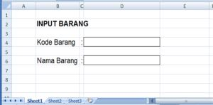
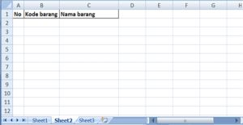
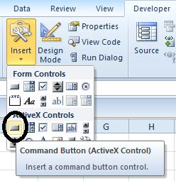
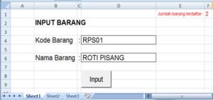
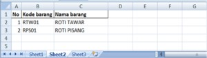
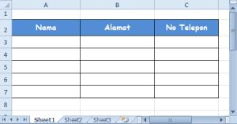
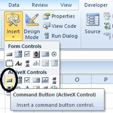
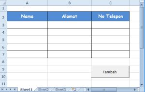
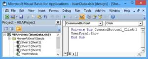
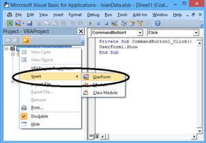
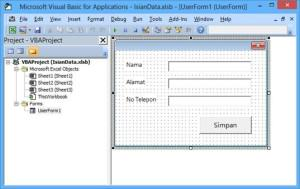
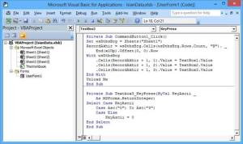
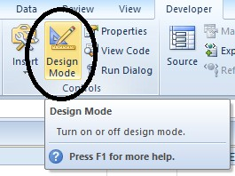
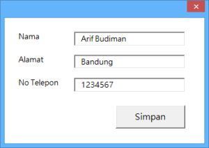
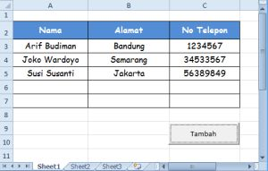
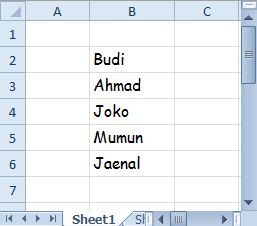
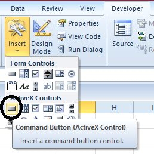
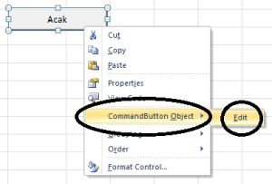
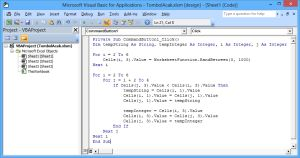
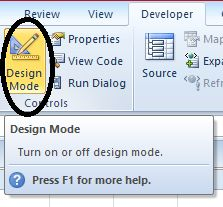
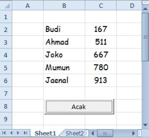
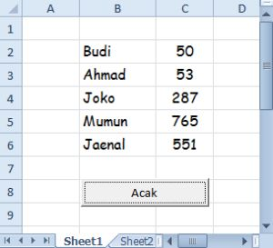
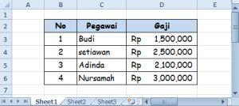
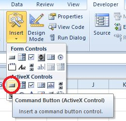
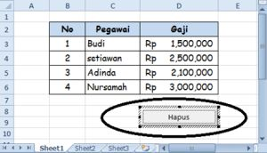
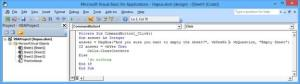
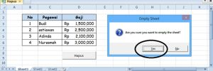
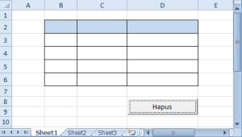